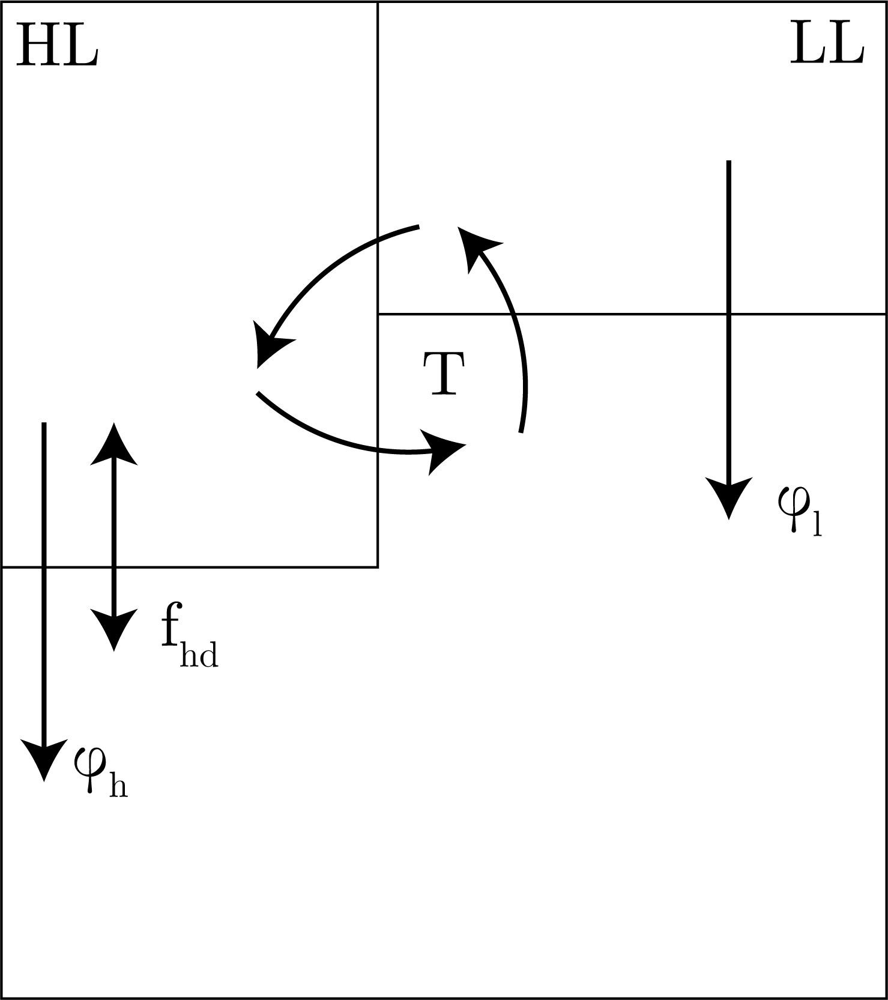

We recall our 2-box model from last time as:
\begin{equation}
V_d \frac{\textrm{d}C_d}{\textrm{d}t} = v(C_s - C_d) + \phi = 0,
\end{equation}
which gives:
\begin{equation}
\phi = v(C_d - C_s),
\end{equation}
which importantly we note is linearly related to the exchange rate, so if this is off so is our estimate $\mathcal{O}(1)$.
Phosphate Example
We can plug in numbers for phosphate PO$_4^{3-}$, a commonly used tracer for models like these, to get:
\begin{equation}
\phi^p = (1.2 \times 10^{15}) (2.1 - 0) \simeq 2.5 \times 10^{12}\: [\text{mol P y}^{-1} ].
\end{equation}
This is a large number that is hard to really grasp.
Therefore, we introduce the following concept.
Redfield Ratio
We have the following relationship between respiration and photosynthesis:
\begin{equation}
106\text{CO}_2 + 16 \text{NO}_3^- + \text{PO}_4^{3-} + x \text{H}_2\text{O} \leftrightharpoons \text{C}_{106}\text{N}_{16}PO_\gamma \text{H}_\delta + \{138 \text{ to } 170\}\text{O}_2.
\end{equation}
This then gives a Redfield ratio C:N:P:O$_2$ of:
\begin{equation}
106:16:1:-\{138 \text{ to } 170\}.
\end{equation}
A Cautionary Tale
We can use this box model to get the concentration of O$_2$ in the deep box, noting:
\begin{equation}
\phi^{\text{O}_2} = -150\phi^p = -150v(C^p_d - C^p_s),
\end{equation}
which then gives:
\begin{equation}
C^{\text{O}_2}_d = C^{\text{O}_2}_s + \frac{\phi^{\text{O}_2}}{v} \simeq 234 - 150(2.1) = -81 \: [\mu\text{M}].
\end{equation}
Clearly, this is wrong. Where did we go wrong? It is in the assumptions of our model, as our math here is clear and correct.
So, this shows that we need to be very careful in what we assume when modelling.
In the case of phosphate, we note that the Southern Ocean has disproportionately large values of phosphate, which ventilate the deep ocean.
3 Box Model
The set-up is presented in Fig. 1 for this model.

Fig. 1: The 3-box model.
We can write the equations for this model as:
\begin{equation}
V_d \frac{\textrm{d}C_d}{\textrm{d}t} = (T + f_{hd})\left( C_h - C_d \right) + (\phi_l + \phi_h).
\end{equation}
Density
In freshwater, we get:
\begin{equation}
\rho_{\text{fresh}} \simeq 10^3 \: [\text{kg m}^3].
\end{equation}
In seawater, we get:
\begin{equation}
\rho_{\text{seawater}} \sim \rho(T, S, p).
\end{equation}
We note that we can decompose this into:
\begin{equation}
\rho = \rho_0 + \sigma.
\end{equation}
We define this anomaly as:
\begin{equation}
\sigma = \left( \frac{\rho}{\rho_0} - 1 \right) \times 10^3.
\end{equation}
We note that this is nondimensional, and we often take $\rho_0 = 10^3$ [kg m$^{3}$].
Potential Temperature
We use potential temperature, $\Theta$, as the temperature that a water parcel would be if it was at the surface.
Units
We define:
Molarity = mol vol$^{-1}$
Molality = mol mass$^{-1}$
We also define a Sverdrup as $10^6$ [m$^3$ s$^{-1}$].
Mixing
We introduce the idea of mixing, in which we note that salinity and temperature are conservatively mixed, i.e. mixing proportional to the relative contributions of the endmembers.
However, this is not the case in density, in which we have "cabelling", which we present in Fig. 2.
Fig. 2: Mixing and the effect on density from cabelling. We also provide a basic relation of different water masses
In addition, we provide a basic description of the different water masses in the T-S-$\rho$ plot.
Heat Transport
We have transport of heat across the surface ocean, which is important for the formation of different water mass characteristics in our study in this class.
We present a schematic of this heat input and output, as well as transport via atmospheric circulation, in Fig. 3.
Fig. 3: Heat and transports across the surface ocean globally.